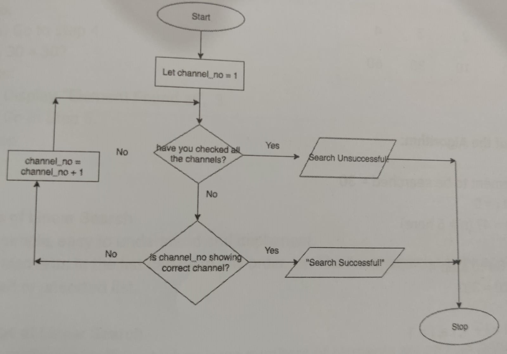

Flowchart:

Algorithm:
Step 1: Accept the element to be searched from the user. (Similar to the channel to be searched.)
Step 2: Let i = 0 where i denotes the index of the element currently being searched. (Similar to the channel number starting from 0.)
Step 3: Is i > n? (Have we searched the last element in the list already? / Similar to checking if channel Number has exceeded Last.)
If yes:
(a) Display "Element not in list".
(b) Go to Step 5.
If no:
(a) Go to step 4.
Step 4: Is the element in i equal to the desired element?
If yes:
(a) Display, "Element Found at", i.
(b) Go to Step 5.
If no:
(a) i = i + 1
(b) Go to Step 3.
Step 5: Stop.
Python program:
Algorithm:
Step 1: Let i= 1 (loop variable that indicates number of passes), 1 (loop variable to control swaps within a pass)
Step 2: Is i > n-1? (Have we completed n-1 passes?)
If yes:
(a) Display "List is sorted"
(b) Go to Step 7
If no:
(a) Go to Step 3.
Step 3: Compare element at j with its neighbour
Step 4: Is the neighbour smaller?
If yes:
(a) Swap element at j with neighbour
(b) Go to Step 5
If no:
(a) Go to Step 5
Step 5: j = j +
Step 6: Have we completed all the swaps in this pass?
If yes:
(a) i = i + 1
(b) Go to Step 2
If no:
Go to Step 3
Step 7: Stop
Python code: